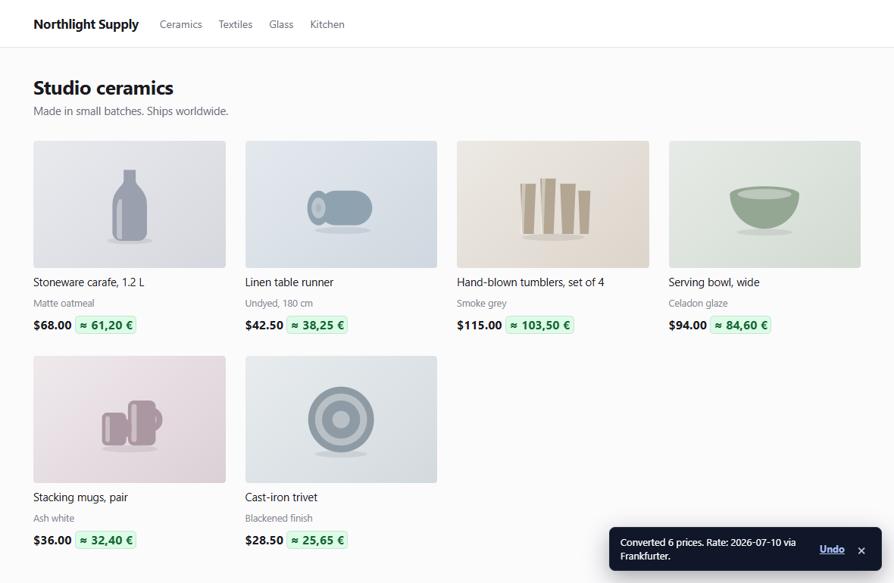
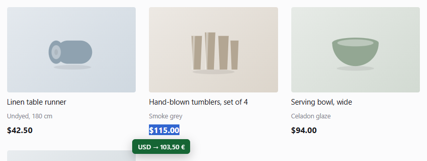

O GUIA DO USUÁRIO DO TWINPRICE
Como converter preços de sites no Chrome e no Firefox
O Twinprice é uma extensão de navegador gratuita que converte os preços das páginas de compras para a sua moeda preferida. Instale-a, escolha as moedas e selecione Converter os preços da página. Para apenas um preço, destaque-o com a moeda e clique em Converter seleção.
Atualizado em
1. Instale o Twinprice no seu navegador
Abra a página do Twinprice na Chrome Web Store ou a página do Twinprice no Firefox Add-ons e siga as etapas de instalação do seu navegador. Não é preciso criar nenhuma conta do Twinprice.
Abra uma página de compras comum. Use o menu de extensões do navegador para abrir o Twinprice; fixe-o na barra de ferramentas se quiser acesso mais rápido. O acesso às páginas da web permite que a extensão encontre preços compatíveis e exiba as conversões. Leia a política de privacidade para saber como funcionam as permissões e as solicitações de taxas de câmbio.
2. Converta os preços de uma página de compras
- Abra o Twinprice pela barra de ferramentas do navegador.
- Em DE, deixe AUTO selecionado para detectar a moeda de origem, ou escolha-a você mesmo. Se um símbolo for ambíguo, selecione a moeda correta manualmente.
- Em PARA, escolha a moeda que você quer ver. Pesquise pelo nome ou pelo código da moeda, como EUR ou USD.
- Clique em Converter os preços da página. Se o conversor estiver desativado, a ação pode aparecer como Ativar e converter a página.
Você também pode usar Converter preços no aviso exibido na página quando o Twinprice encontra um preço compatível. Na exibição lado a lado, o valor original continua visível junto da conversão.

3. Converta um único preço destacado
Primeiro, defina a moeda de destino no pop-up do Twinprice. Depois, destaque um preço em uma página, incluindo o símbolo ou o código da moeda — por exemplo, USD 115.00. Clique no botão azul Converter seleção abaixo do destaque. O resultado aparece em um balão verde.
Você também pode clicar com o botão direito no texto selecionado e escolher Convert selected currency. A conversão da seleção é útil quando você só precisa de um valor, sem converter o restante da página.

4. Lembre as configurações de uma loja favorita
Abra Opções da página no pop-up e ative Converter este site automaticamente. O Twinprice lembra a conversão automática desse site, incluindo a moeda de origem escolhida manualmente ou a opção AUTO.
Nos controles de aparência do pop-up, você pode escolher as cores e o formato dos preços convertidos. Também pode exibir os preços convertidos ao lado dos originais ou no lugar deles.
5. Restaure os preços ou desative a conversão
Depois de converter uma página, abra o pop-up e selecione Restaurar os preços originais para desfazer as conversões. Para interromper a conversão automática nessa loja, desative Converter este site automaticamente em “Opções da página”.
Para interromper a varredura de preços, os avisos e a conversão automática em todos os lugares, desative Ativar o conversor.
Exemplos práticos para comprar no exterior
Estes exemplos mostram como escolher as moedas e interpretar uma conversão. Todas as taxas abaixo são inventadas para ilustração; a extensão usa a taxa disponibilizada pelo provedor.
Como vejo um preço em euros em zlotys poloneses?
Para uma loja que cobra em euros, escolha DE: EUR e PARA: PLN e clique em Converter os preços da página. Se uma luminária custa € 89 e a taxa de exemplo é de 4,30 PLN por EUR, o preço convertido é 382,70 PLN (89 × 4,30). Mantenha o original visível para comparar o valor da loja com a estimativa na sua moeda.
Para converter apenas o preço dessa luminária, defina PLN como moeda de destino, destaque o preço incluindo € ou EUR e clique em Converter seleção.
O cifrão sempre significa dólares americanos?
Não. USD, CAD, AUD e outras moedas usam o cifrão. Confirme a moeda no seletor de moeda da loja ou nas informações de pagamento. Para um anúncio em dólares canadenses, escolha DE: CAD, mesmo que o preço exibido seja simplesmente $100. Escolher USD usaria outro par de moedas.
O AUTO usa o contexto de moeda da página. Se o resultado não estiver claro, escolha a origem manualmente. Quando uma loja permite mudar a moeda exibida, faça a origem do Twinprice corresponder à moeda mostrada na página naquele momento.
Por que o valor cobrado é diferente da conversão do Twinprice?
O Twinprice estima um preço para comparação usando uma taxa de câmbio de referência. Ele não altera o preço da loja nem define a taxa usada pelo seu banco, pela operadora do cartão ou pelo serviço de pagamento. Frete, impostos, margens de conversão e outras tarifas podem mudar o total final.
Por exemplo, a uma taxa inventada de 0,90 EUR por USD, um item de USD 100 sai por EUR 90. Uma tarifa de conversão hipotética de 3% sobre esse valor acrescentaria EUR 2,70, chegando a EUR 92,70 antes de quaisquer outras cobranças. A conversão de preços do Twinprice não calcula essa tarifa. Confira o total final da loja e as condições do seu provedor de pagamento para saber quanto você vai pagar.
Como comparo os preços de duas lojas?
Use a mesma moeda de destino nos dois sites, mas escolha a moeda de origem correta para cada loja. Converta os preços dos produtos e depois compare os totais finais, com frete e impostos. Um item com preço convertido menor ainda pode custar mais no total.
Se você só quer comparar valores que já conhece, digite um deles no campo Valor do pop-up. Escolha antes uma moeda de origem específica se o AUTO ainda não tiver identificado nenhuma.
Posso converter preços sem uma conexão recente com a internet?
Taxas recentes em cache podem permitir a conversão quando não há uma taxa nova disponível. Isso depende de haver uma taxa em cache utilizável para as moedas solicitadas; não há garantia de que o Twinprice funcione totalmente offline. Ele avisa quando as taxas em cache passam de 48 horas e não usa taxas com mais de sete dias.
Veja de onde vêm as taxas e as limitações do produto quanto a navegadores e moedas.
Se um preço não for convertido
- O AUTO não consegue identificar a moeda
- Um símbolo como $ pode se referir a várias moedas. Escolha a moeda da loja em DE e tente novamente. Para um preço selecionado, inclua o código da moeda quando ele aparecer no texto da página.
- Nada acontece em uma página de configurações do navegador ou em uma loja de extensões
- Os navegadores restringem o acesso das extensões a essas páginas. Tente em uma página de compras comum e verifique se o Twinprice está ativado e tem acesso a esse site.
- Alguns preços permanecem inalterados
- O Twinprice funciona com o texto compatível das páginas. Preços dentro de imagens, de frames inacessíveis ou de layouts incomuns podem não ser detectados. Tente selecionar um preço em texto ou digitar o valor no pop-up.
- Um par de moedas ou uma taxa nova não está disponível
- Os pares disponíveis dependem do provedor de taxas de câmbio. Verifique sua conexão e as moedas escolhidas e tente novamente. O Twinprice pode usar taxas recentes em cache; ele avisa após 48 horas e não usa taxas com mais de sete dias.
- O total na hora de pagar é diferente da conversão
- O Twinprice usa as taxas de referência da Frankfurter para ajudar a comparar preços. Um banco, uma operadora de cartão ou um serviço de pagamento pode aplicar outra taxa e cobrar tarifas. O valor convertido não muda o que a loja cobra.
Ainda com problemas? Relate um problema no GitHub informando seu navegador, a versão do Twinprice e um exemplo reproduzível. Evite incluir dados pessoais de compra ou de pagamento.